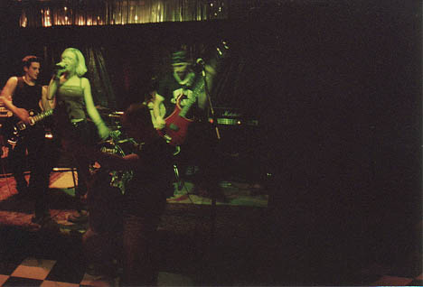
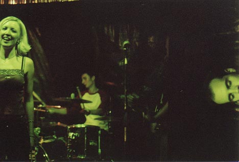
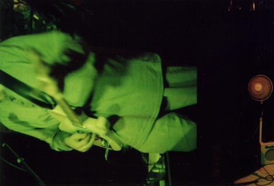
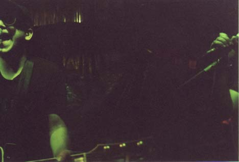
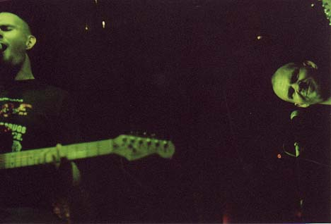

Big Orange Crayonmusical thingsAmerican Hot Wax, Jason Marton, Atom and His Package and Mr. Allen Wrench Valentine's, Albany, NY August 11th, 2001 Strange, vaguely picture-like things at the bottom... My pictures from this show didn't come out at all. I was already down to 1/15 of a second exposures and that still wasn't nearly enough, even with the apertures wide open and with ISO 1600 film. I tried, at least. The machine that made the prints couldn't even figure out where the images were supposed to be, so most of the prints are part of one picture and part of another, so nothing really makes much sense. Stupid goddamn computer-controlled monstrosities... Anyway, the show itself was good, so I can't really complain. Everybody was introduced by this guy who read these cute letters that he wrote to all sorts of companies and the responses he got back - my favorite was the Keebler Elves one. American Hot Wax was the first band to play, and they were pretty good - not really my thing, but I kind of liked them anyway. Despite the fact that they're a pop-punk band that's all guys plus a blond girl lead singer, I tried to be fair and take pictures of everybody equally, but it doesn't really matter, does it? Jason Martin was next. The thing I like about his shows is that it's really hard to determine what's going through his head when he's playing. He started by asking for requests of pop songs. Even though he never heard of most of them, he covered them nonetheless. This went on for quite a while, and I can't imagine what the people who never saw him before were thinking. He made the transition from this to the end of his set by playing a song he wrote when he was twelve. From then on, he played fractured versions of his material, which made for a very frantic, confusing, but somehow entertaining experience. Go experimental music! Atom and His Package were (was? Do I really have to use plural verb inflections when referring to one person and a synthesizer?) the headliners, but played next-to-last. I was just really happy that he played "Happy Birthday Ralph" and "The Metric Song". I think Atom is one of very few goofy (if it's ok to use that word) songwriters that actually makes me laugh - I mean, "If you own the Washinton Redskins, you are a cock" is just awesome. Mr. Allen Wrench played last, equipped with a Lite-Brite that said "ROCK" and a tube amp infested with demons. He played a really cool show, but not too far into it his amp decided that it was going to freak out and not work any more, so he had to end early... So in that spirit of technical difficulties, here are my pictures, amusingly mangled by the print machine:  Most of American Hot Wax  American Hot Wax and Jason Martin's disembodied head!  Jason's torso, upset that its head left it for American Hot Wax, composes a soulful tune  One Atom, two Atom, green Atom, between Atom!  The several faces of Mr. Allen Wrench |